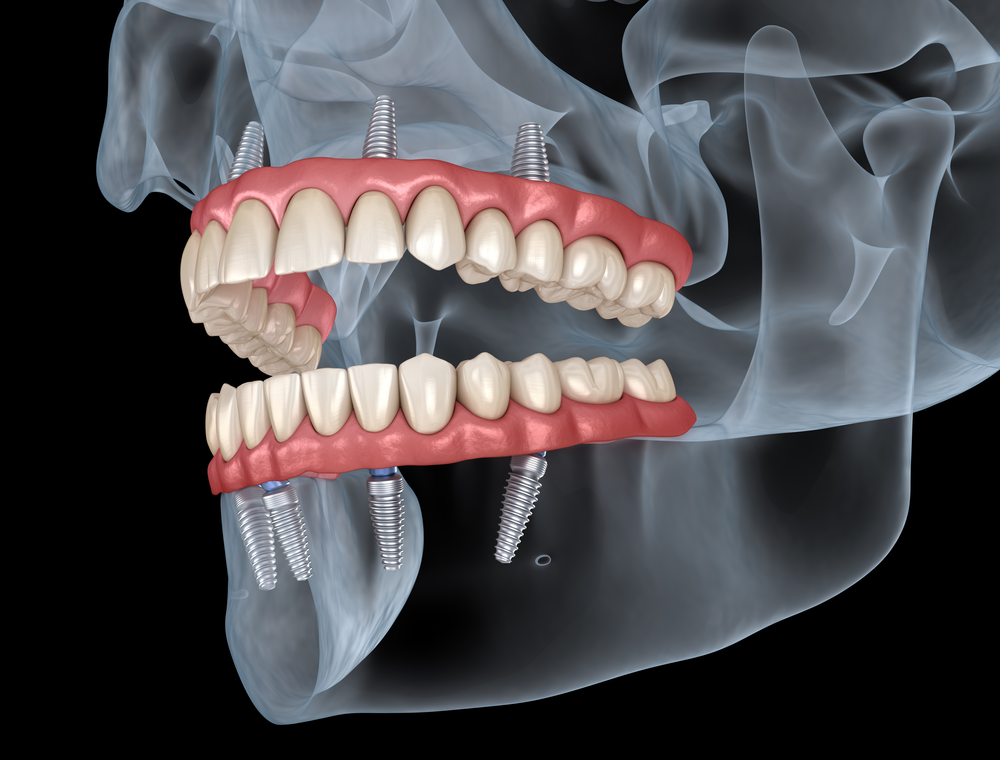

Regular check-ups, cleanings, oral hygiene education, and patient awareness for long-term dental health.

Fillings, crowns, dentures, and root canal treatments to repair and restore function and comfort.

Smile makeovers using teeth whitening, veneers, and dental bonding to improve the look of your teeth.
Annual Dental Check-Up Package
The package includes the following services:
- Physical Examination: A thorough examination of your overall dental health, including checking for any signs of illness, abnormalities, or discomfort.
- Cleanings: Ensuring that your teeth are clean and free from plaque and tartar.
- X-Rays: Assessment and preventive measures against common dental issues.
- Dental Check-Up: Evaluation of your dental health, including checking for signs of dental disease and providing advice on dental care.
- Nutritional Guidance: Discussion about your diet, nutritional needs, and recommendations for maintaining a healthy smile.
- Blood Tests or Laboratory Work (if necessary): Additional diagnostic tests may be recommended based on your age, dental history, or specific health concerns.
Get a Free Dental Checkup at 100SMILES Dental Care*
Are you ready to take the first step towards a healthier, brighter smile? 100SMILES Dental Care is excited to offer a FREE dental checkup on Saturday, 5th July starting 9 a.m! This is the perfect opportunity to ensure your dental health is in top shape without any cost.
How to Book Your Free Checkup:
- Call Us: Contact us at 07 1327 5599 to schedule your appointment.
- Email Us: Send an email to admin@100smilesdentalcare.com.au with your preferred time slot.
- Visit Us: Drop by our clinic at 195 Fantail Street, Cairnville, Queensland, and our friendly receptionist will assist you.
What to Expect During Your Free Checkup:
- Free Examination: Our experienced dentists will conduct a comprehensive examination of your teeth and gums to identify any potential issues.
- Advance Booking Cleanup: Enjoy a professional cleaning to remove plaque and tartar, leaving your teeth feeling fresh and clean.
- Personalized Advice: Receive personalized advice on maintaining your oral health and preventing future dental problems.
- Treatment Plan: If any issues are detected, we will provide you with a detailed treatment plan and discuss the best options for your dental care.
Limited Slots Available!
Don't miss out on this fantastic opportunity to get a free dental checkup. Book your appointment today and take the first step towards a healthier smile!
We look forward to seeing you on Saturday, 5th July!